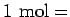

Inhalt
Index
DeskTop Bronstein
Tabellen
Physikalische Einheiten im SI-System
Grundgrößen
Länge
m
Meter
Zeit
s
Sekunde
Masse
kg
Kilogramm
Temperatur
K
Kelvin
Stromstärke
A
Ampere
Stoffmenge
mol
Mol (

A Stück, A = A
VOGADRO
-Zahl)
Lichtstärke
cd
Candela